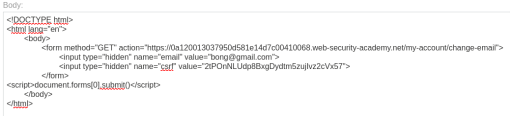

CSRF where token validation depends on request method
- Provided with blog website, credentials “wiener:peter", told to use provided exploit server to host HTML page that uses CSRF attack to change viewers email
- Logged in with provided credentials
- Intercepted change email request in burpsuite
- Copied full request and used csrfshark.github.io/app to convert to usable CSRF form HTML
- Pasted into body section on provided exploit server after modifying POST to GET:

- Delivered exploit to victim and completed lab successfully: